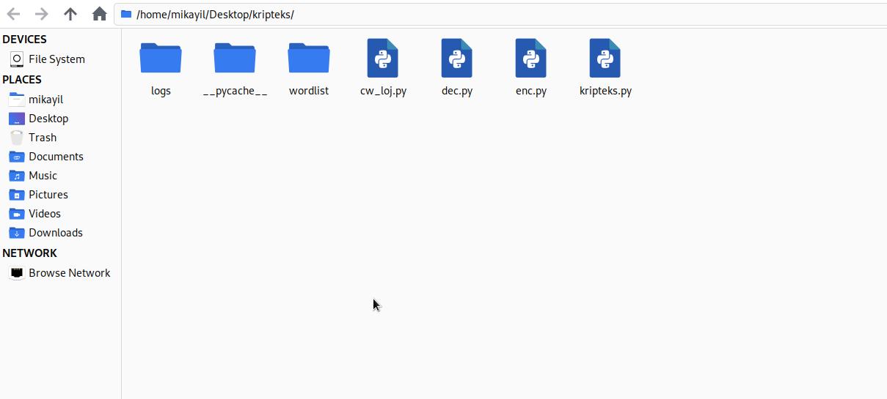
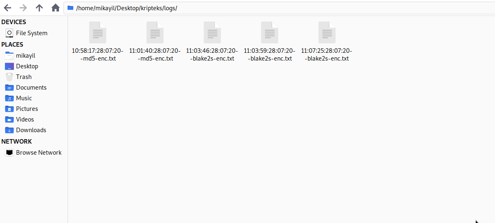
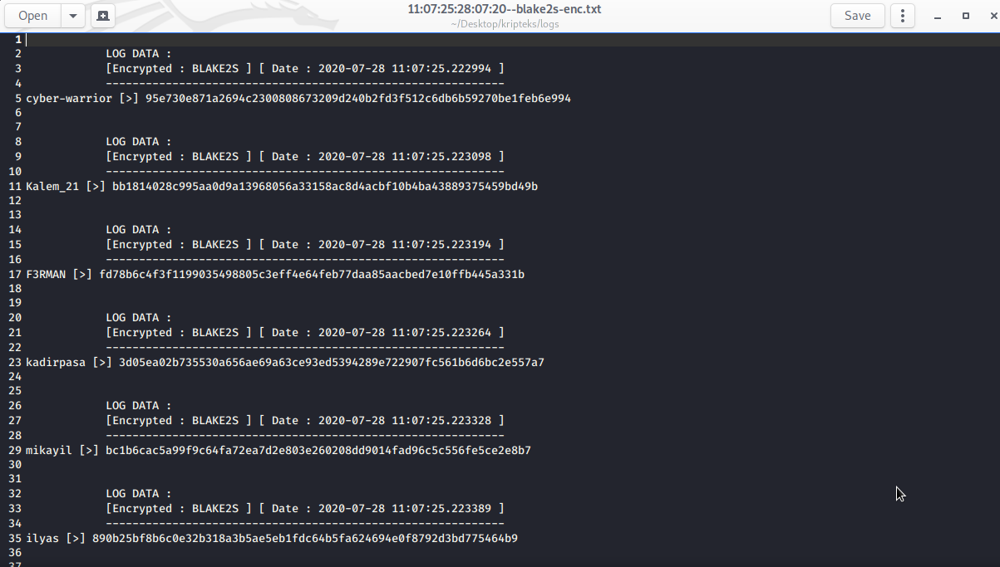
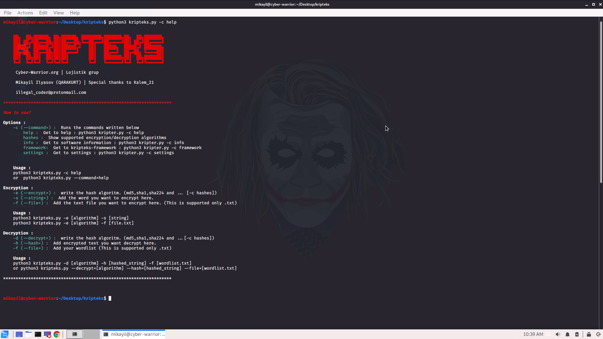
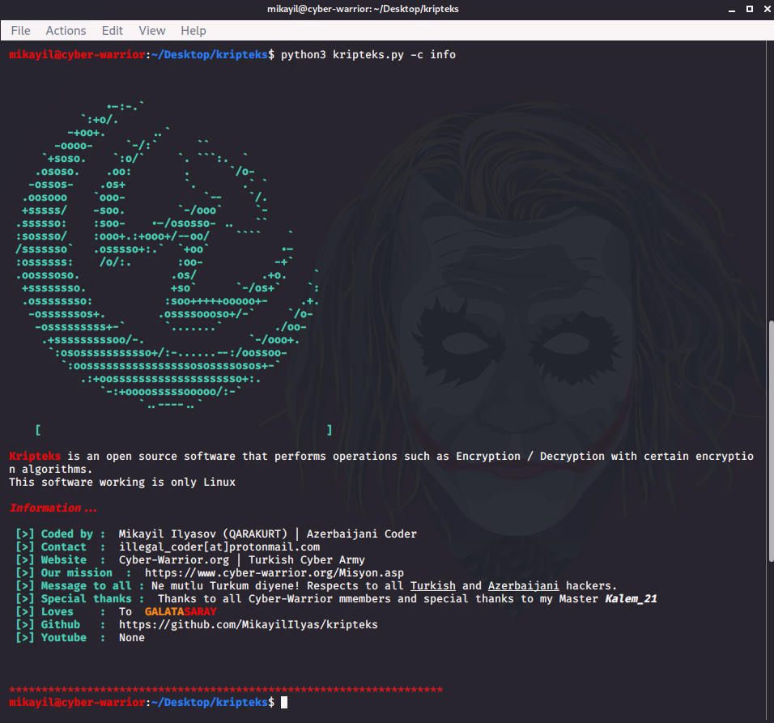
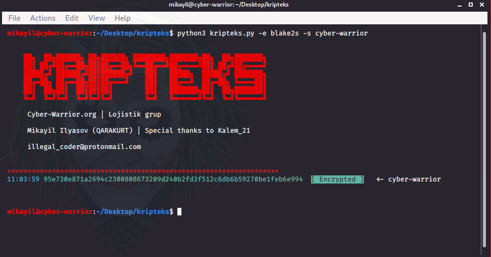
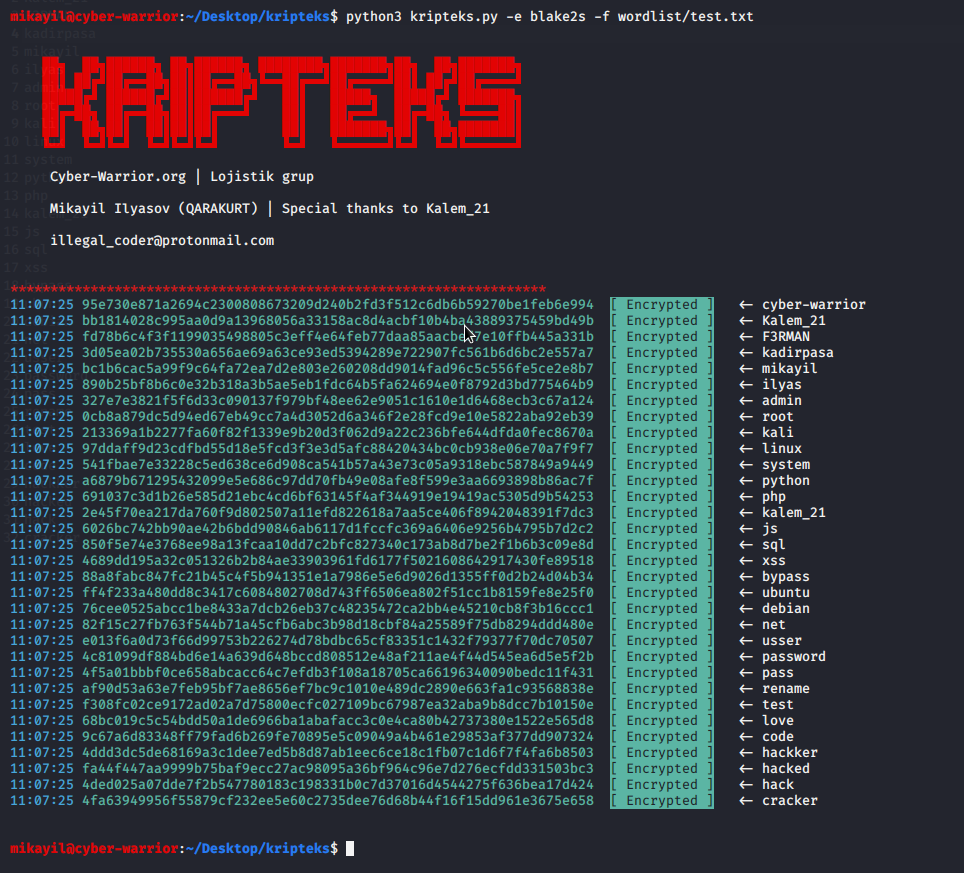
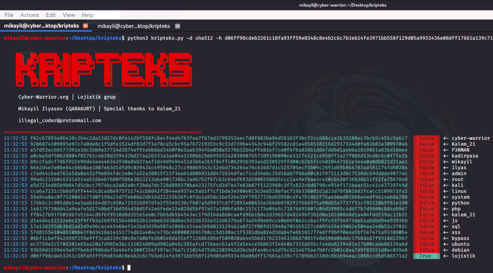
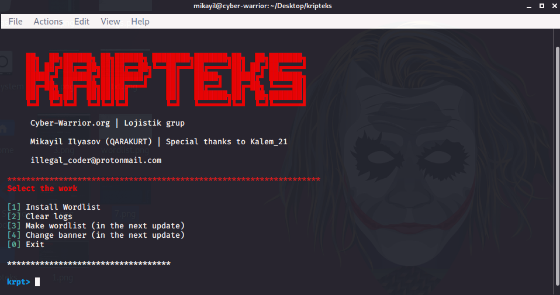

Usage and parameters.
Although the cryptex software is console based, I tried to make it as User Friendly as I can. The colors and shades used are easy to read and easy to wear. importance is given to be. Let's first look at the cryptex folder. Logs folder :
Encryption and Decryption operations logged here.
Let's take a look at the Log file that occurs after doing the Sample Encryption.
Wordlist folder:
Some worlists are ready to download in the software to make the user work easier. After giving the download command, all downloaded wordlists are added here. If you create a Wordlist file yourself, I suggest adding it here.
cw_loj.py, dec.py, enc.py:
modules and functions created by myself to do the necessary operations.
kripteks.py:
The program we will use.
Now let's see how it is used
python3 kripteks.py -c help or python3 kripteks.py --command help 
Options:
-c (--command =): To write the commands specified below
help: Getting help: python3 kripter.py -c help
hashes: looking at supported algorithms
info: Notes about the software and the developer: python3 kripter.py -c info
framework: Kripteks-framework (Active in the current version): python3 kripter.py -c framework
settings: Go to settings: python3 kripter.py -c settings
python3 kripteks.py -c info
Encryption
Encryption:
-e (--encrypt =): Type the encryption algorithm. (md5, sha1, sha224 and other [-c hashes])
-s (--string =): Type the word you want to encrypt. (Gap / probel is not supported)
-f (--file =): Add the text file you want to encrypt. (Only supports .txt)
Use :
python3 kripteks.py -e [algorithm] -s [string]
python3 kripteks.py -e [algorithm] -f [file.txt]
python3 kripteks.py –e md5 –s cyber-warrior


Encrypt words in file
python3 kripteks.py –e blake2s –f wordlist/test.txt
Decryption
Decryption:
-d (--decrypt =): Type the encryption algorithm to decipher. (md5, sha1, sha224 and other [-c hashes])
-h (--hash =): Add encrypted text
-f (--file =): Add your Wordlist
Use :
python3 kripteks.py -d [algorithm] -h [hashed_string] -f [wordlist.txt]
or python3 kripteks.py --decrypt = [algorithm] --hash = [hashed_string] --file = [wordlist.txt]
python3 kripteks.py –d hash_type –h hashed_str –f worlist/test.txt

Settings
It is no longer necessary to write a command here. Your job will be easier with inputs.

[1] Install Wordlist - Worlist installation
[2] Clear logs - Clean all log files (in the logs folder).
[3] Make wordlist (in the next update)
[4] Change banner (in the next update)
[0] Exit (exit)
Thanks to reading.
mail : illegal_coder@protonmail.com